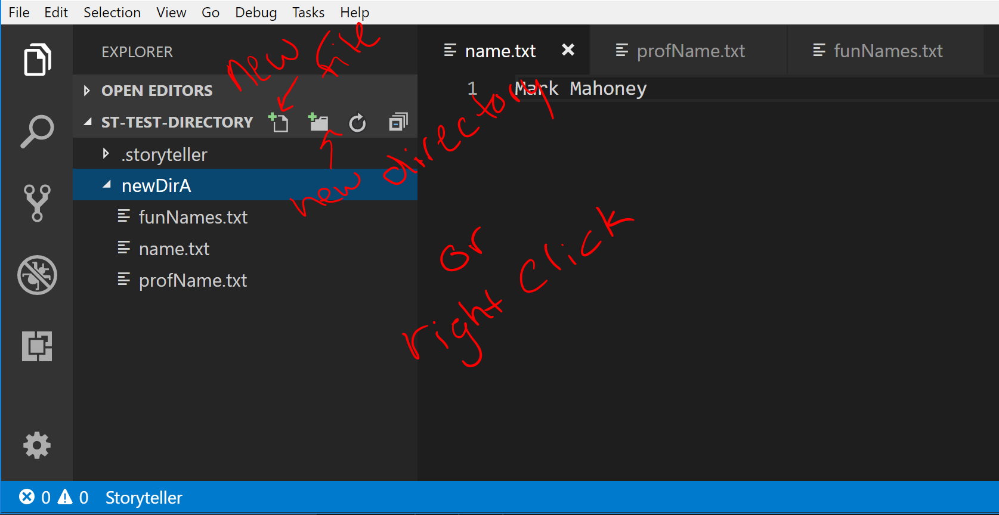

Files and directories can be added anywhere in the Storyteller project directory. When Storyteller is active it records these file system events and then plays them back during a playback to indicate when they occurred.

Tip: VS Code has a file explorer view of an open folder.
It is preferable to use this interface to create new files and directories than using the File menu.
A file created using File -> New File (or the equivalent cmd/ctrl + N command) is not automatically added
to the Storyteller project directory and therefore isn't tracked until is is saved to the project directory. Once the new file is
saved in the Storyteller project directory (ctrl/cmd + S) then the file contents will be added and any new changes
will be tracked.
Storyteller also tracks the moving, renaming, and deleting of files and directories. It creates events for each of these file operations that will be displayed in a playback.
Tip: The current view of the file system is always available during a playback.